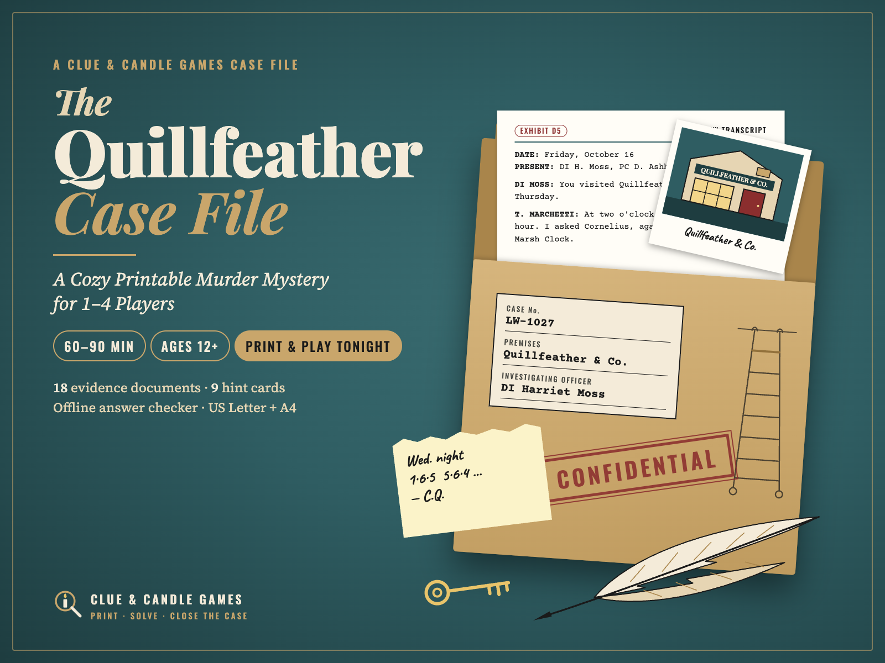
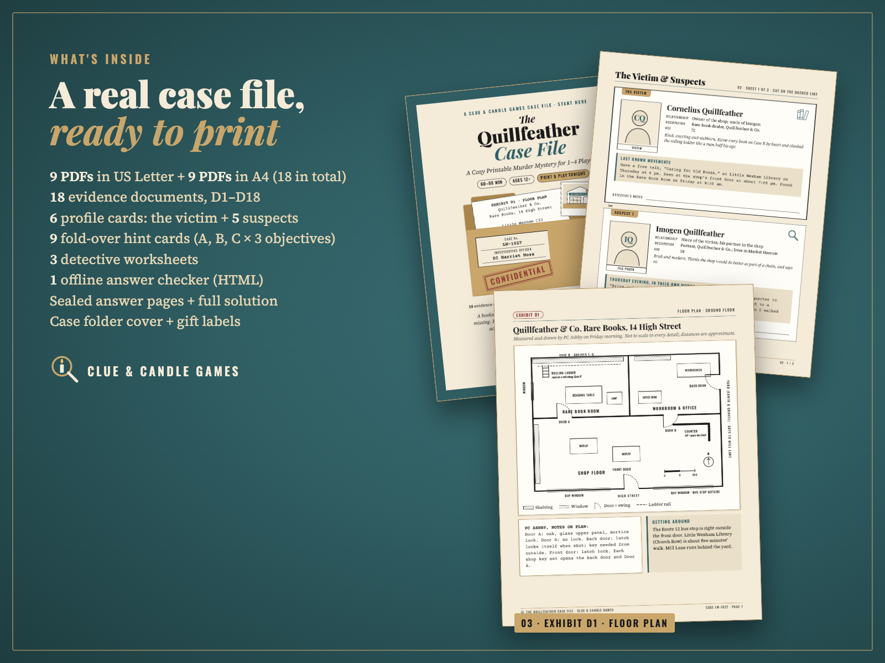
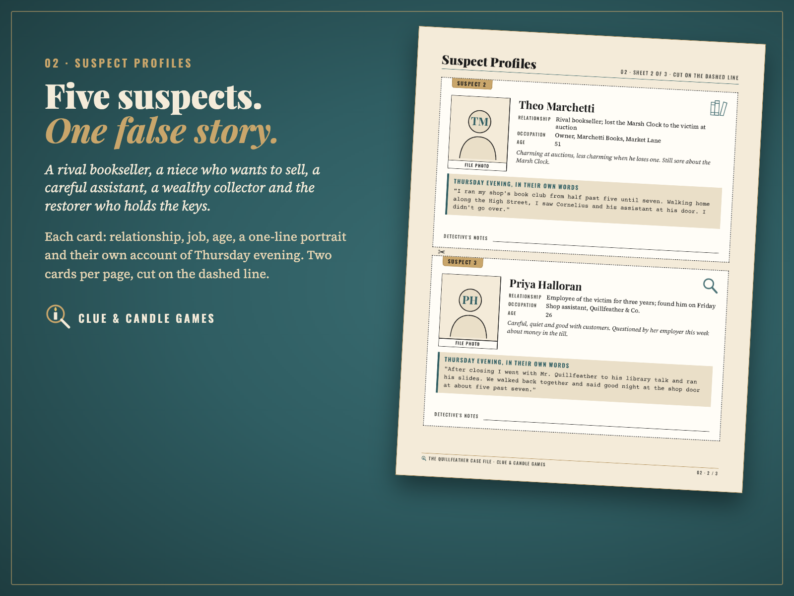
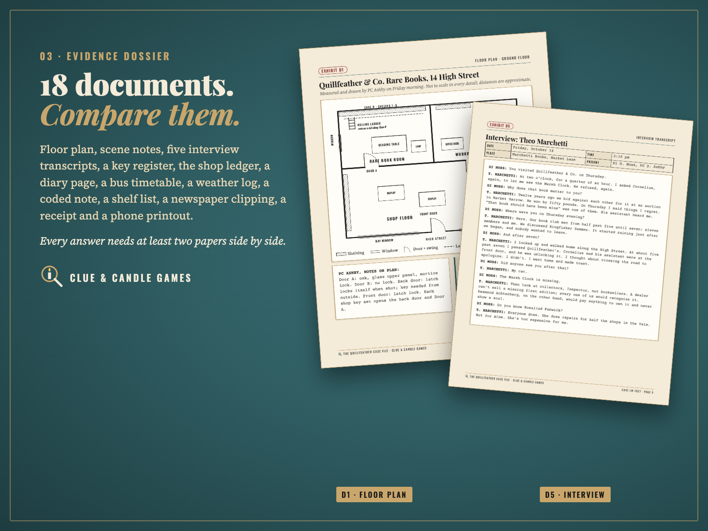
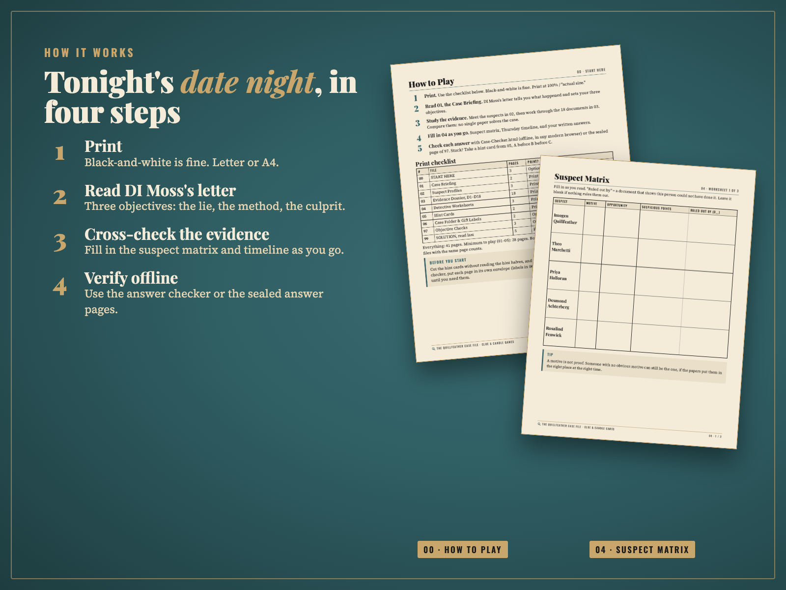
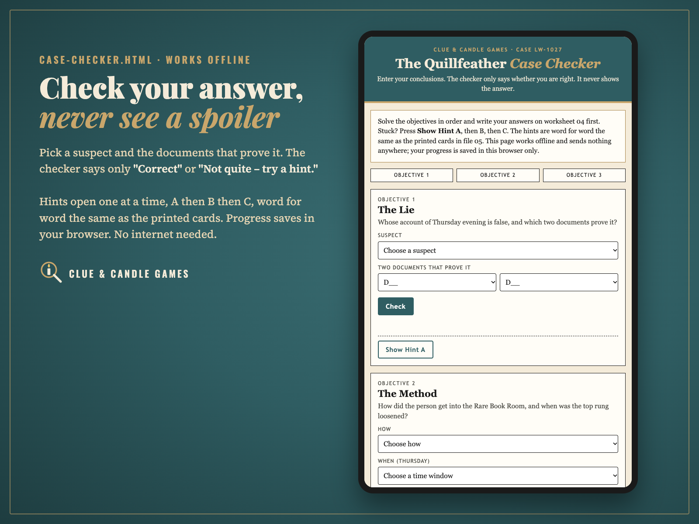

A cozy printable detective case file: solve a bookshop murder from 18 evidence documents, with hints and an offline answer checker. 1–4 Players · Ages 12+ · about 60–90 minutes for two · US Letter and A4. From Clue & Candle Games, the games imprint of Hustle Studio.
Try our puzzle style free first: The Case of the Cold Cocoa is a free 10-page printable mini mystery from the same team, with a full clue chain in its solution. No email or signup. Download the free mini mystery (PDF) · what the paid case adds

$9.00 USD, one-time · instant download · no subscription
Buy now: $9At checkout the product is listed as "The Quillfeather Case File: Murder Mystery Game for 1–4" by Hustle Studio.
Can't crack the case, or just not happy with it? You get a full refund. Email chenphien@gmail.com within 14 days of purchase with your order email. We refund the full $9 through Waffo to your original payment method. You don't need to give a reason (see Terms).
Questions? We reply to every email within 24 hours.
🔒 Secure checkout. Payment is handled by Waffo Pancake, our merchant of record. Waffo processes the payment, handles any sales tax or VAT that applies and emails you a receipt. Your payment details go to Waffo, never through this shop, and we never see your card.
📥 Instant download. Right after payment you land on your download page with the ZIP and every file on its own. Nothing is shipped.
Cornelius Quillfeather, 72, owner of a rare bookshop in the English village of Little Wexham, fell from the top of his library ladder on Thursday evening and never woke up: his assistant found him dead at the foot of the ladder the next morning. The brass top rung had been loosened on purpose, and a valuable first edition, The Marsh Clock, is missing from the top shelf. Detective Inspector Harriet Moss sends you the file and asks three questions, in order: whose story is a lie, how the ladder was tampered with, and who did it.
You don't act out a character. You are the consulting detective: you read real-looking papers and compare them. No single document gives the answer away. Each innocent suspect has believable reasons to look guilty and at least one document that clears them. Rated PG: the death is described only as a fall, with nothing gruesome.
Every picture below shows real, unedited pages from the PDFs or a screenshot of the real checker. We picked pages that don't give away the answer or clear any suspect.





This is the full index of the Evidence Dossier, so you can see how much there is to read before you buy. It names the document types only, not what they reveal.
| # | Document | # | Document |
|---|---|---|---|
| D1 | Floor plan of the shop, with PC Ashby's notes on the doors | D10 | The shop ledger |
| D2 | PC Ashby's scene notes | D11 | A page from Cornelius's diary |
| D3 | DI Moss's working timeline (Thursday to Friday morning) | D12 | Route 12 bus timetable |
| D4–D8 | Five interview transcripts, one per suspect | D13 | Weather log |
| D9 | The key register | D14 | A coded private note |
| D15 | Shelf list | ||
| D16 | Newspaper clipping | ||
| D17 | A shop receipt | ||
| D18 | Phone message printout |
File 05 prints 9 cards (6 on page 1, 3 on page 2). You cut on the dashed line and fold on the dot-dash FOLD line, so only the label shows and the hint stays hidden until you open it. The diagram below shows the real card labels; the hint halves are left out here on purpose.
Diagram of the card layout (not a photo). The same three cards exist for Objectives 2 and 3. No card states the answer: you still make the final step yourself. The same hints, word for word, are built into the Case Checker.
One ZIP, The-Quillfeather-Case-File_ClueAndCandleGames.zip, with 19 files: the same 9 PDFs in a US-Letter/ folder and an A4/ folder (identical content and page counts, 18 PDFs in total), plus Case-Checker.html. Every file can also be downloaded on its own from your download page. 41 pages per paper size; minimum to play is 28 pages (files 01–05).
| # | File (in both US-Letter/ and A4/) | Pages |
|---|---|---|
| 00 | Start Here: how to play, print checklist, ways to play for 1, 2 or 3–4 players | 3 |
| 01 | Case Briefing: DI Moss's letter, the 3 objectives and the rules | 2 |
| 02 | Suspect Profiles: 6 cut-out cards (the victim + 5 suspects) | 3 |
| 03 | Evidence Dossier: 18 evidence documents, D1–D18, one per page | 18 |
| 04 | Detective Worksheets: suspect matrix, Thursday timeline, answer sheet | 3 |
| 05 | Hint Cards: 9 fold-over hint cards | 2 |
| 06 | Case Folder & Gift Labels: folder cover, 3 envelope labels, 2 gift tags | 2 |
| 97 | Objective Checks: one sealed answer page per objective | 3 |
| 99 | SOLUTION, Read Last: what really happened, the 7-step clue chain, why the other four are innocent, DI Moss's closing letter | 5 |
| — | Case-Checker.html (one file, in the ZIP root): offline answer checker with the 9 hints built in | — |
The-Quillfeather-Case-File_ClueAndCandleGames.zip (19 files) ├── Case-Checker.html ├── US-Letter/ (9 PDFs, 41 pages) │ ├── 00-START-HERE.pdf │ ├── 01-Case-Briefing.pdf │ ├── 02-Suspect-Profiles.pdf │ ├── 03-Evidence-Dossier.pdf │ ├── 04-Detective-Worksheets.pdf │ ├── 05-Hint-Cards.pdf │ ├── 06-Case-Folder-and-Gift-Labels.pdf │ ├── 97-Objective-Checks.pdf │ └── 99-SOLUTION-Read-Last.pdf └── A4/ (the same 9 PDFs in A4 size)
Yes. Every objective can be solved from the documents alone, by comparing at least two of them. The 5-page solution lays out a 7-step clue chain and explains why each of the other four suspects is innocent. The story is original and was written with AI assistance; every clue was checked against the solution before release. If you find a gap in the logic, tell us: you get your refund, and we fix the file.
The Case of the Cold Cocoa (free, 10 pages, a 4–6 player party mini mystery, about 45 minutes) shows our writing and fair-play style. Download it free.
What The Quillfeather Case File adds:
Can I play alone?
Yes. Read the file in order, fill in the worksheets, and check each objective before moving on. One player takes about 75–120 minutes.
How hard is it?
Medium. Each of the 3 objectives needs you to compare at least two documents. Two players working together take about 60–90 minutes.
What if we get stuck?
Use the 9 hint cards (3 per objective). Hint A says which document to reread, Hint B which part of it, Hint C which two things to compare. The same hints are built into the Case Checker.
Will we know for sure we got the right ending?
Yes. The checker (or the sealed answer page) confirms each objective, and the solution file walks through the full 7-step clue chain and why each other suspect is innocent. If the ending still feels unclear to you, email us within 14 days for a full refund.
Is it scary or gory?
No. It's a cozy mystery rated PG for ages 12+. The victim is found dead after a fall from a ladder; nothing gruesome is described, and there's no adult content.
Can I give it as a gift?
Yes. Print it, use the case folder cover and gift tags in file 06, and seal the answer pages in envelopes with the matching labels.
Do I need internet?
Only to download. Case-Checker.html works offline in a modern browser; nothing is sent anywhere. You can also skip it and use the printed answer pages (97).
Black-and-white printing?
Yes. All text, tables, the floor plan and the hint-card fold lines are designed to stay clear in black and white.
Are there reviews?
Not yet. Clue & Candle Games is a new studio, so there are no reviews or customer photos yet, and we won't invent any. That's why this page shows real pages, the full evidence index and a free mini mystery, and why every purchase has a 14-day no-questions refund.
How do checkout and refunds work?
Checkout is run by Waffo Pancake, the merchant of record: it takes the payment, handles applicable sales tax/VAT and emails your receipt. For a refund, email chenphien@gmail.com within 14 days with your order email; we reply within 24 hours and the refund goes back to your original payment method.
Licence?
For personal and family use: print as many copies as your own household needs. Please don't resell or share the files. All names, places and events are fictional.
$9.00 USD, one-time
Buy now: $9🔒 Secure checkout by Waffo Pancake (merchant of record); your payment details never pass through this shop. Instant download. 14-day no-questions refund. Questions: chenphien@gmail.com, reply within 24 hours.